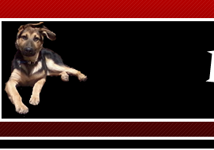

{kind=link}
El Perro
Canis lupus familiaris
El perro o perro doméstico (Canis lupus familiaris) es un mamífero carnívoro de la familia de los cánidos, que constituye una subespecie del lobo (Canis lupus). Un estudio publicado por la revista de divulgación científica Nature revela que, gracias al proceso dedomesticación, el organismo del perro se ha adaptado5 a cierta clase de alimentos, en este caso el almidón.6 Su tamaño o talla, su forma y pelaje es muy diverso según la raza. Posee un oído y olfato muy desarrollados, siendo este último su principal órgano sensorial. En las razas pequeñas puede alcanzar una longevidad de cerca de 20 años, con atención esmerada por parte del propietario, de otra forma su vida en promedio es alrededor de los 15 años. Se cree que el lobo gris, del que es considerado una subespecie, es el antepasado más inmediato. Las pruebas arqueológicas demuestran que el perro ha estado en convivencia cercana con los humanos desde hace al menos 9000 años, pero posiblemente desde hace 14 000 años. Las pruebas fósiles demuestran que los antepasados de los perros modernos ya estaban asociados con los humanos hace 100 000 años. Las investigaciones más recientes indican que el perro fue domesticado por primera vez en el este de Asia, posiblemente enChina; sin embargo, es incierto si todos los perros domésticos provienen de un mismo grupo o si el proceso de domesticación se repitió varias veces. Hay aproximadamente 800 razas —más que de cualquier otro animal— que varían significativamente en tamaño, fisonomía y temperamento, presentando una gran variedad de colores y de tipos de pelo según la raza de perro. Tienen una gran relación con los humanos, para quien son animales de compañía, animales de guardia, perros de trabajo, perros de caza, perros de aguas, galgos de carrera, perros guía, perros pastores o perros boyeros por ejemplo. En 2001, se estimaba que había 400 millones de perros en el mundo.
Ancestros e historia de la domesticación
En el siglo XXI, los investigadores han alcanzado un consenso casi absoluto acerca de que es muy posible que la domesticación del perro empezara más por la adaptación espontánea de este al acercarse a vivir junto al hombre que por la voluntad humana.8 Esto se debe a que vivir junto al hombre siempre fue ventajoso para el cánido. Un perro viviendo en una comunidad humana, aún en la Antigüedad, podía alimentarse con menos esfuerzo que uno salvaje, podía vivir en mejores condiciones disfrutando del afecto y cuidado humano. El perro es una subespecie doméstica del lobo, según la comparación de los mapas genéticos de ambas especies.9 La evidencia fósil más antigua de un perro domesticado fue encontrada en 2008 en la cueva Goyet de Bélgica, correspondiente a unos 31.700 años y al parecer asociado a la cultura auriñaciense.10 Hasta entonces las pruebas más antiguas se habían encontrado en Rusia, pertenecientes a hace 14.000 años (Eliseevich). El hombre consiguió domesticar a ejemplares de lobos, o, más probablemente, se demostró incapaz de impedir que los lobos se introdujeran en sus aldeas y tuvieran allí a sus cachorros.8 El perro era útil como ayuda en la caza y para defender al grupo y su morada. Poco a poco, el hombre los adaptó a sus necesidades, creando diferentes razas para las distintas labores y características ambientales y geográficas. El ser humano se dio cuenta rápidamente de los finos sentidos del olfato y el oído que tenía el perro;[cita requerida] su olfato es más potente que del humano —su área olfatoria es 20 veces más gruesa, y en el caso del pastor alemán con una superficie 34 veces mayor y con 40 veces más células olfatorias— y su oído es capaz de percibir sonidos muy por debajo y por encima del rango que oyen los humanos. Ventaja ésta que aumenta su utilidad para la caza y las labores de guarda. Su uso como pastor y protector de los rebaños es bastante posterior, yendo pareja a la domesticación y explotación de otros animales. Animal de costumbres sociales, que convive en grupos perfectamente jerarquizados, se adaptó a convivir con los humanos. Los perros son muy valorados por su ayuda en la caza. Los perros enterrados en el cementerio mesolítico de Svaerdborg en Dinamarca muestran que, en la antigua Europa, eran ya una valiosa compañía. Los perros han acompañado al hombre en su proceso a la civilización; su presencia está probada en todas las culturas del mundo, así en Perú en la etapa preincaica, los mochicas los usaban como ayuda de caza y también como mascotas en casa. En el entierro del Señor de Sipán, se encontraron dentro de las tumbas restos de un perro que seguramente se usó en la caza, ya que el cráneo tenía perfectamente desarrollados sus molares. El cráneo y los dientes del perro doméstico han disminuido de tamaño con relación al lobo al no necesitar matar presas grandes. Así mismo, al pasar de una dieta de carne a una constituida por los desechos provenientes de la alimentación de los humanos, desarrollaron cerebros más pequeños que requieren menos calorías y menos proteínas para su crecimiento y sustento. La percepción del perro por parte del ser humano ha variado y varía según las culturas, en varias etnias americanas anteriores a 1492, tal y como aún ocurre en zonas del Extremo Oriente Asiático, los perros eran usados directamente como alimento; en zonas del Oriente Medio el perro ha sido asociado por su aspecto con los chacales —de hecho científicamente se creyó hasta el desarrollo de la genética a fines del siglo XX que los perros comunes de todo el mundo eran descendientes de chacales— y al ser los chacales animales principalmente carroñeros, los perros también han sido considerados impuros en esa zona. Quizás la única especie de perro que no desciende del lobo es el perro fueguino que descendería del culpeo.
Características
Diferencias respecto a otros cánidos
En comparación con lobos de tamaño equivalente, los perros tienden a tener el cráneo un 20% más pequeño y el cerebro un 10% más pequeño, además de tener los dientes relativamente más pequeños que otras especies de cánidos.11 Los perros requieren menos calorías para vivir que los lobos. Su dieta de sobras de los humanos hizo que sus cerebros grandes y los músculos mandibulares utilizados en la caza dejaran de ser necesarios. Algunos expertos piensan que las orejas flácidas de los perros son el resultado de la atrofia de los músculos mandibulares.11 La piel de los perros domésticos tiende a ser más gruesa que la de los lobos y algunas tribus esquimales prefieren su piel para vestirse, debido a su resistencia al desgaste en un clima inhóspito.11 A diferencia de los lobos, pero al igual que los coyotes, los perros domésticos tienen glándulas sudoríparas en las almohadillas de las patas.11 Las patas de un perro son aproximadamente la mitad de las de un lobo y su cola tiende a curvarse hacia arriba, otro rasgo que no se observa en los lobos.
Anatomía externa
Diagrama de la anatomía general de un perro: 1. frente, 2. hocico, 3. barboquejo, 4. hombro, 5. codo, 6. pata anterior, 7. punto más alto de la grupa, 8. muslo, 9. corvejón, 10. patas traseras, 11. cruceta, 12. babilla, 13. patas, 14. cola
La enorme variedad de morfologías en las diferentes razas de perro hace difícil determinar el tamaño y el peso medios de los perros. Con una altura de entre 71 y 90 cm, el galgo irlandés es la raza más alta de perro13 —aunque algunos ejemplares de gran danés superan este tamaño, llegando hasta 107 cm—.14 La raza más pequeña de perro es el chihuahua, con un tamaño de 15-25 cm en la cruz. Con un peso medio de entre 1,5 y 3 kilogramos —y que en algunos casos, puede no superar los 500 g—,15 los chihuahuas también son los perros más ligeros, los mastines ingleses y los san bernardos son los perros más pesados, con un peso que puede llegar a más de 75 ú 80 kg.16 La longevidad de los perros varía de una raza a otra, pero en general las razas más pequeñas viven más tiempo que las más grandes. Los perros más pequeños a menudo viven hasta la edad de quince o dieciséis años, mientras que los perros más grandes pueden tener una esperanza de vida de sólo la mitad. En medio se encuentran todas las razas intermedias. El perro más viejo del que se tiene constancia, un Boyero australiano llamadoBluey, murió en el año 1939 a la edad de veintinueve años.17 La esterilización del animal puede prolongar o acortar su vida, reduciendo el riesgo de contraer enfermedades como piometría en la hembra o cáncer testicular en el macho. También reduce el riesgo de accidentes y heridas, pues los perros no esterilizados se pelean y se escapan más. Por otro lado, la castración del macho favorece la aparición de cáncer de próstata, una enfermedad que puede acortar drásticamente la vida del animal.18 Pelaje Al igual que los lobos, los perros tienen un pelaje, una capa de pelos que los cubre el cuerpo. El  pelaje de un perro puede ser un «pelaje doble», compuesto de una capa inferior suave y una capa superior basta. A diferencia de los lobos, los perros pueden tener un «pelaje único», carente de capa inferior. Los perros con un pelaje doble, como los lobos, están adaptados para sobrevivir en temperaturas frías y tienden a provenir de climas más fríos. Los perros suelen presentar vestigios de contrasombreado, un patrón de camuflaje natural común. La base general del contrasombreado es que un animal iluminado desde arriba aparece más claro en la mitad superior y más oscuro en la mitad inferior, donde normalmente tiene su propio color.19 20 Este es un patrón que los predadores pueden aprender a reconocer. Un animal contrasombreado tiene una coloración oscura en la superficie superior y una coloración oscura en la inferior. Esto reduce la visibilidad general del animal. Un vestigio de este patrón es que muchas razas tienen un lado, una raya o una estrella de pelaje blanco en el pecho o en la parte inferior.
pelaje de un perro puede ser un «pelaje doble», compuesto de una capa inferior suave y una capa superior basta. A diferencia de los lobos, los perros pueden tener un «pelaje único», carente de capa inferior. Los perros con un pelaje doble, como los lobos, están adaptados para sobrevivir en temperaturas frías y tienden a provenir de climas más fríos. Los perros suelen presentar vestigios de contrasombreado, un patrón de camuflaje natural común. La base general del contrasombreado es que un animal iluminado desde arriba aparece más claro en la mitad superior y más oscuro en la mitad inferior, donde normalmente tiene su propio color.19 20 Este es un patrón que los predadores pueden aprender a reconocer. Un animal contrasombreado tiene una coloración oscura en la superficie superior y una coloración oscura en la inferior. Esto reduce la visibilidad general del animal. Un vestigio de este patrón es que muchas razas tienen un lado, una raya o una estrella de pelaje blanco en el pecho o en la parte inferior.
Cola
Hay muchas formas diferentes de cola de perro: recta, recta hacia arriba, forma de hoz, rizada o en tirabuzón. En algunas razas, la cola es cortada tradicionalmente para evitar heridas, especialmente en los perros de caza. En algunas razas, algunos cachorros nacen con una cola corta o sin cola. Esto sucede más a menudo en ciertas razas, especialmente en aquellas en las que a menudo se corta la cola y que por tanto no tienen estándar de raza en cuanto a la cola.
Aparato locomotor
Como la mayoría de mamíferos predadores, el perro tiene músculos potentes, un sistema cardiovascular que permite una alta velocidad y una gran resistencia y dientes para cazar, aguantar y desgarrar las presas. El esqueleto ancestral de los perros les permite correr y saltar. Sus patas se han desarrollado para impulsarlos rápidamente hacia delante, saltando cuando es necesario, con el fin de cazar y atrapar las presas. Por tanto, tienen pies pequeños y apretados y caminan sobre los dedos (digitígrados). Sus patas traseras son bastante rígidas y sólidas, mientras que las anteriores son laxas y flexibles, estando unidas al tronco únicamente por músculos. Aunque la cría selectiva ha cambiado la apariencia de muchas razas, todos los perros conservan los elementos básicos de sus antepasados. Los perros tienen omóplatos desconectados —carecen de clavícula— que permiten hacer zancadas más largas. La mayoría de razas conservan las garras vestigiales —espuelas— en las patas anteriores y a veces en las posteriores. Algunas de estas razas, como el perro pastor catalán, pueden presentar un espolón doble en una o más patas. En algunos casos, se les quitan esas garras para evitar que el animal se las arranque sin querer durante la persecución de una presa, pero esta práctica es ilegal en algunos países.